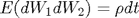

cflib
Returns the characteristic function evaluation of commonly encountered models in finance. Part of the CFH Toolbox.
Syntax
W = CFLIB(U,TAU,PAR,TYPE)
For model choice TYPE='BS','BSJump','Heston','HestonJump', this function returns the characteristic function at real argument U for a maturity TAU and a parameter structure PAR.
Input Arguments U can either be a (K)x(1) or (1)x(K) array of characteristic function arguments. TAU denotes the time to maturity under consideration. PAR is a structure that corresponds to the required parameters of the model choice in TYPE.
Example 1: Black Scholes Model
In the Black Scholes model, the dynamics of the logarithmic spot process are:
resulting in the characteristic function
where .
The characteristic function of the Black Scholes model is also included in cflib, using the argument type='BS'.
S0 = 1;
par.rf = 0.05;
tau = 1;
par.sigma = 0.25;
par.x0 = log(S0);
cf = @(u) cflib(u,tau,par,'BS');
[fB xB] = cf2pdf(cf);
plot(xB,fB);
Example 2: Heston's stochastic volatility model with Merton type jumps
In Heston's stochastic volatility model with Merton type jumps, the risk neutral dynamics of the logarithmic spot process and the variance process are
where 
Here, is the constant intensity of the jump process and %  is the risk neutral drift adjustment. Let
is the risk neutral drift adjustment. Let
then
The corresponding characteristic function is included in cflib using argument type='Heston'.
Let us assume in addition to Example 1 above
v0 = 0.25^2; kappaV = 0.85; thetaV = 0.30^2; sigmaV = 0.1; rho = -0.7;
Translating this into the fields of the par structure required by cflib, we obtain
par.v0 = v0; par.kappa = kappaV; par.theta = thetaV; par.sigma = sigmaV; par.rho = rho; cf = @(u) cflib(u,tau,par,'Heston'); [fH xH] = cf2pdf(cf); plot(xH,fH,'r',xB,fB,'k') title('Comparison of implied densities of HestonJump and Black Scholes model'); legend('Heston Model with Jumps','Black Scholes');